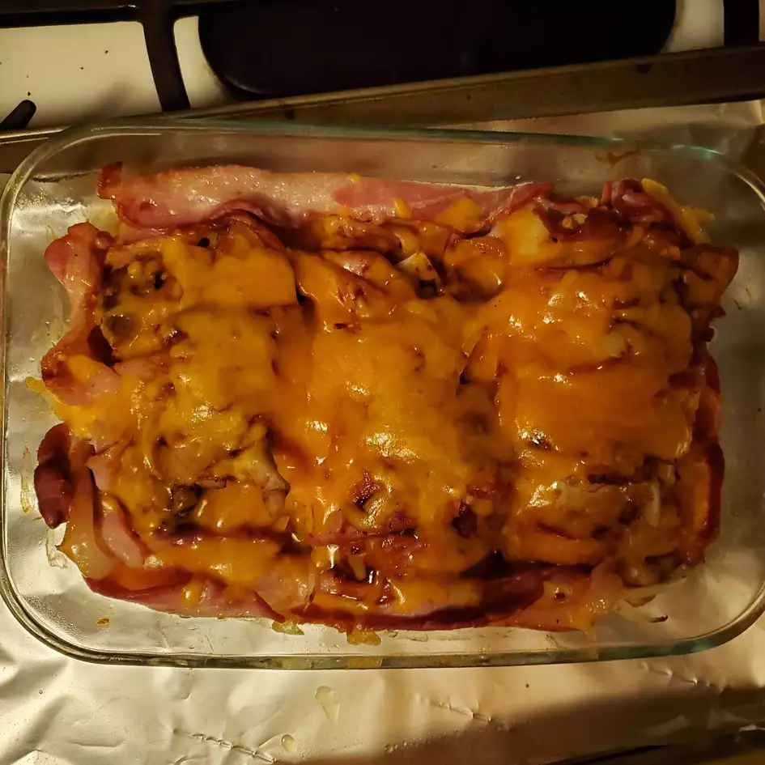

Easy Chicken

Ingredients
- 2 skinless, boneless chicken breast halves
- 4 slices bacon
- 1 (12 ounce) bottle barbecue sauce, or as needed
- 1 cup grated Cheddar cheese, or as needed
Steps
- Fill a small saucepan with water, add chicken, and bring to a boil. Simmer and cook chicken for 10 minutes. Drain.
- Preheat the oven to 375 degrees F (190 degrees C).
- Wrap each chicken breast with 2 slices of bacon and place in an ovenproof baking dish. Cover with barbecue sauce. Sprinkle with grated Cheddar cheese.
- Bake in the preheated oven until the cheese is bubbly and chicken is no longer pink in the center, about 12 minutes.